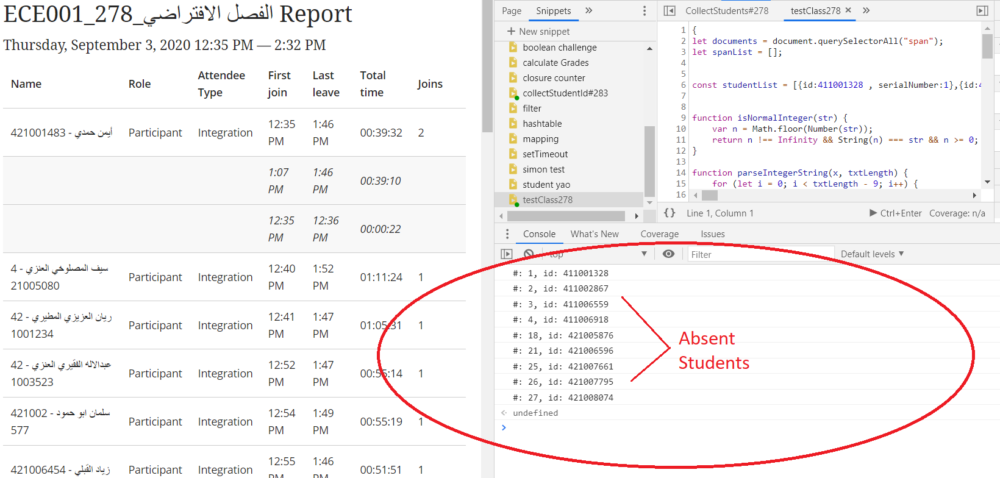

To be able to calculate student absences, you will need to run the code snippet generated by the website for the specific class that you are trying to analyze.
In order for this code-snippet to work correctly, you will need to use the developer's console in the Google Chrome web browser and run the code snippet over the page on the Tabuk BlackBloard page that contains the student attendance report data for your class.
It maybe a little complicated to setup, but once that is finished it will be easy to run the code snippet that is saved in your Chrome browser to get the information you want easily, saving time.
This is the because the code snippet or program that is run, will produce all the serial numbers of the absent students. This will let you update the attendance form on MYUT easily and quickly in most cases. It makes a real difference if you have something like a class of 50 students and maybe only 5 students decide to go absent.